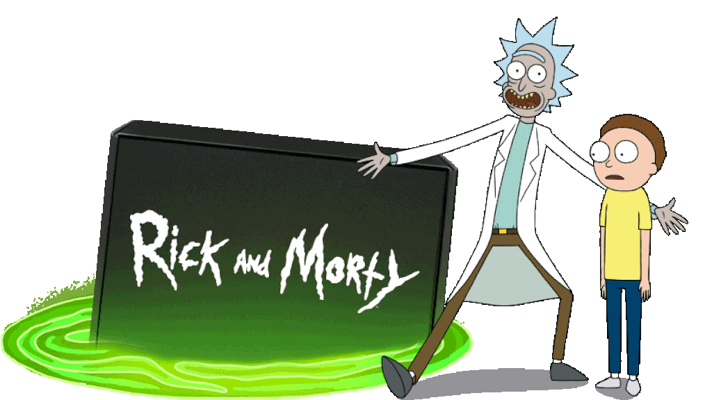
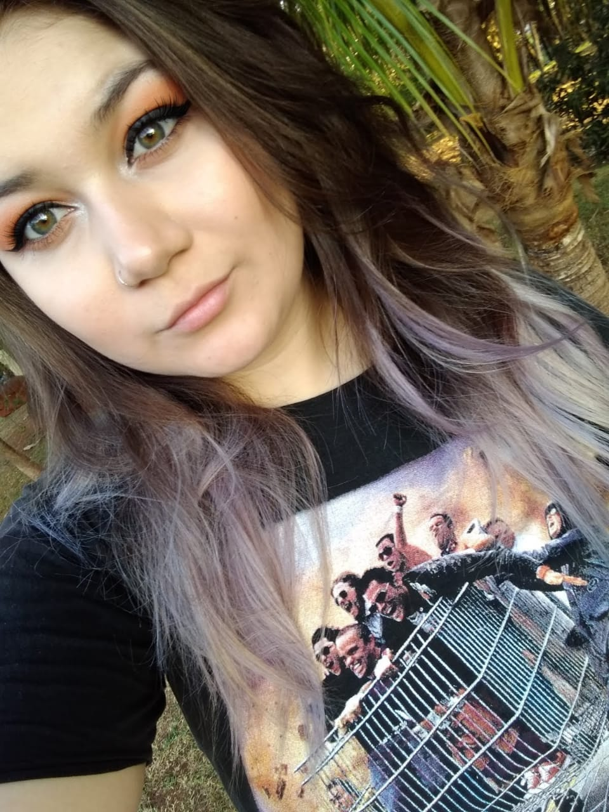
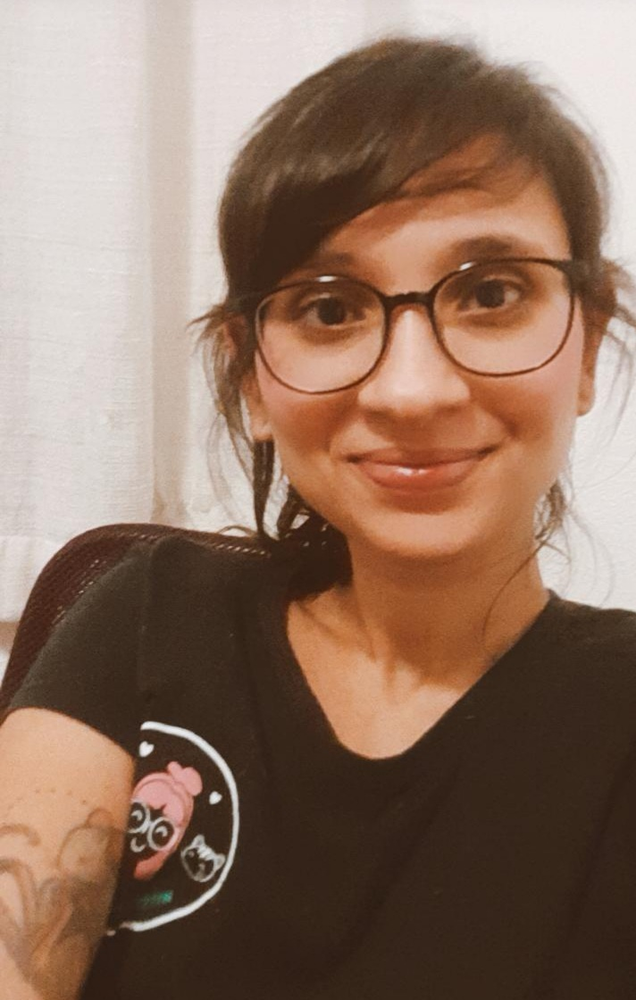

Curiosidades de Rick and Morty que vão fazer você amar esse desenho!
- Rick and Morty nasceu como uma paródia de Doc Brown e Marty McFly, dos filmes De Volta Para o Futuro, lançados na década de 1980.
- O seriado foi criado, vendido e roteirizado em apenas um dia.
- Pickle Rick é uma homenagem a um episódio de Breaking Bad
- Os bordões de Rick são sempre geniais e desbocados! O mais famoso, Wobba Lubba Dub Dub, tem uma tradução não muito feliz na língua das Pessoas-Pássaro: "Eu estou sofrendo muito, por favor me ajude".
- Referência à Community, série da NBC também criada por Dan Harmon. Além da participação dos atores Joel McHale, Gillian Daniels e Jim Rash (respectivamente o Jeff, a Britta e o reitor Dean Pelton) como dubladores dos personagens, em um dos episódios Rick fica entediado tentando bolar uma série de TV que é basicamente uma versão alien de Community.
- Gearhead é inspirado em Roboto do He-Man
- crossover discreto com Gravity Falls, ainda que Gravity Falls seja de uma emissora e Rick and Morty, de outra. No episódio "Close Rick-counters of the Rick Kind", o penúltimo da primeira temporada, Rick abre vários portais para tentar encontrar um dos sósias acusados de assassinato. Em um deles, surgem uma caneca, uma caneta e um bloco de notas — justamente os três itens que desapareceram em "Society of the Blind Eye",de Gravity Falls, e que San disse ter perdido em um portal.
| Status | Quantidade |
| Vivo | |
| Morto | |
| Desconhecido | |
| Total |

Priscila Silveira



Ana Freitas